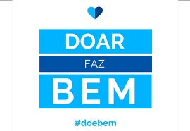

Utilização de IA no processo de doações
A solução tecnológica proposta para o site de uma ONG de doações inclui a aplicação de Inteligência Artificial (IA) em várias áreas. A IA seria utilizada para recomendar organizações de caridade com base no histórico de doações dos usuários, simplificar o processo de doação, verificar a elegibilidade de beneficiários, rastrear o impacto das doações e personalizar a experiência do usuário. Além disso, um chatbot inteligente estaria disponível para fornecer suporte instantâneo aos doadores, e medidas de segurança de dados rigorosas seriam implementadas para proteger as informações pessoais e financeiras. O objetivo é tornar o processo de doação mais eficiente, transparente e envolvente.

A inovação proposta no site da ONG de doações envolve a integração da IA em todas as etapas do processo. Isso inclui recomendações personalizadas de doações, assistência por meio de um chatbot inteligente, simplificação das doações com automação, verificação de elegibilidade, rastreamento de impacto, personalização da experiência do usuário e segurança de dados avançada. Essa abordagem visa melhorar a experiência tanto dos doadores quanto dos beneficiários, garantindo que as doações sejam direcionadas de forma eficaz e transparente para causas importantes.
